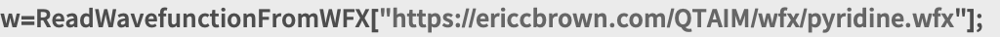
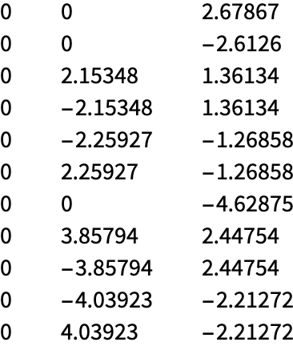
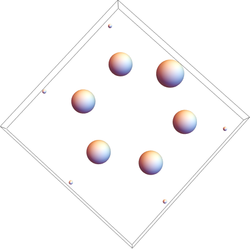

Q T A I M SYMBOL
LocateNuclearCriticalPoints
LocateNuclearCriticalPoints[]
LocateNuclearCriticalPoints
Details
Needs["QTAIM`"];

|
ncps=LocateNuclearCriticalPoints[w];

ncps // Chop // TableForm
Out[12]//TableForm= | |

| |
Graphics3D[
Table[
Sphere[ncps[[i]], 0.1*w["AtomicNumbers"][[i]] ],
{i, 1, Length[ncps]}]
]
| Out[13]= |

|